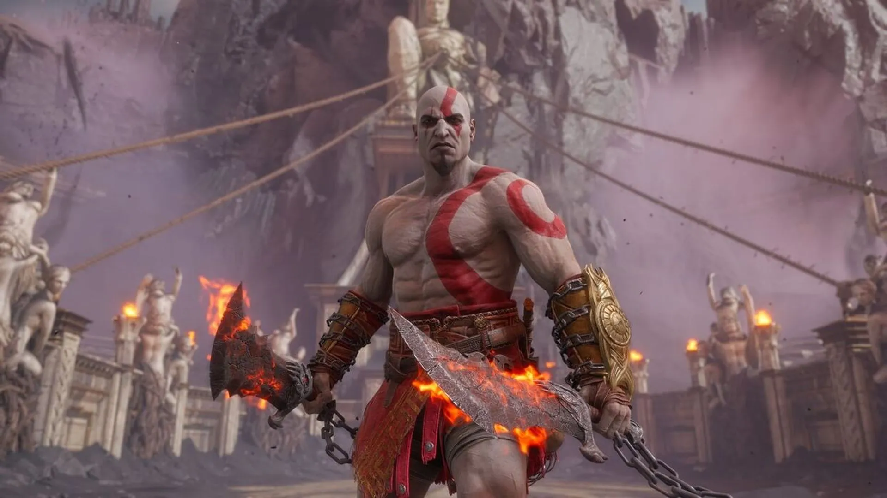

El Regreso a Grecia
Todo lo que sabemos sobre el Remake de la Trilogía Original.

Estado actual del proyecto
El remake de la trilogía original de God of War (God of War I, II y III) fue anunciado oficialmente por Sony Interactive Entertainment durante el State of Play de febrero de 2026.
Está siendo desarrollado por Santa Monica Studio como una reconstrucción completa de la saga griega de Kratos.
El anuncio se realizó mediante un tráiler en el canal oficial de PlayStation, confirmando el proyecto como un remake y no una simple remasterización.
Anuncio oficial y presentación
El tráiler mostró escenarios y elementos clásicos de la trilogía original, confirmando su regreso en una versión moderna para PlayStation 5.
No se presentó gameplay completo, pero sí una clara intención de reconstrucción total.
Sony indicó que se respetará la historia original, pero con mejoras en combate, gráficos y presentación general.
Estado de desarrollo
El proyecto se encuentra en una etapa temprana de desarrollo, sin fecha de lanzamiento confirmada ni gameplay extendido.
La información adicional será revelada en futuras presentaciones oficiales.
Por ahora, solo se han mostrado avances iniciales del concepto del remake.

Importancia dentro de la saga
La trilogía original es una parte fundamental de la historia de God of War, donde se introduce el origen de Kratos y su conflicto con los dioses del Olimpo.
Este remake busca acercar esa historia a nuevas generaciones con estándares modernos.

Relación con la saga moderna
La saga nórdica reforzó el interés por el pasado de Kratos, especialmente a través de referencias en God of War Ragnarök.
Este remake funciona como una reimaginación independiente de la historia original.

Expectativas técnicas
Aunque no hay detalles técnicos oficiales, se espera el uso de tecnología moderna similar a God of War Ragnarök.
Habrá mejoras gráficas, físicas avanzadas y tiempos de carga reducidos.
El objetivo es modernizar la experiencia manteniendo la esencia del combate clásico.